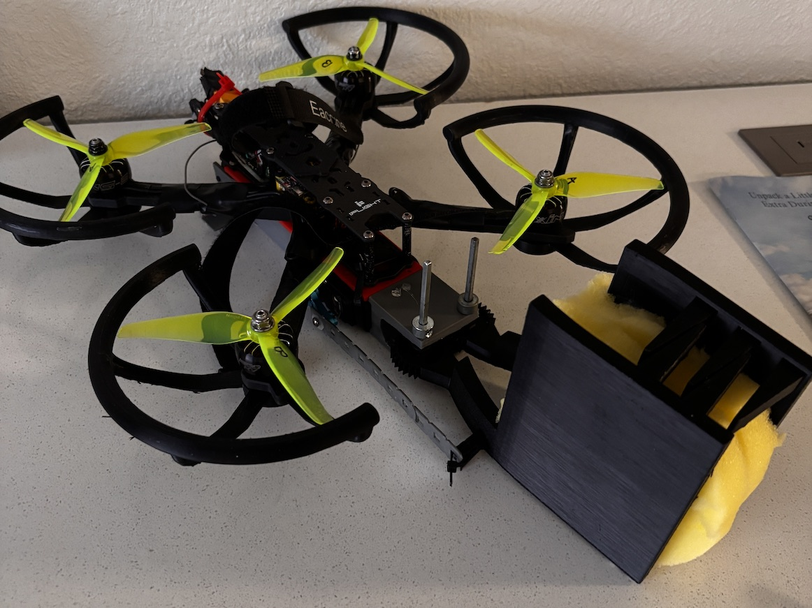
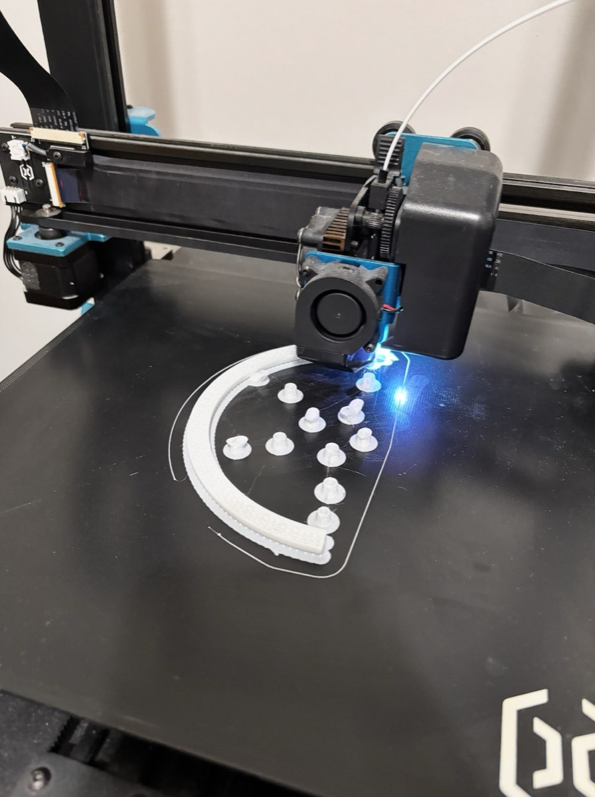
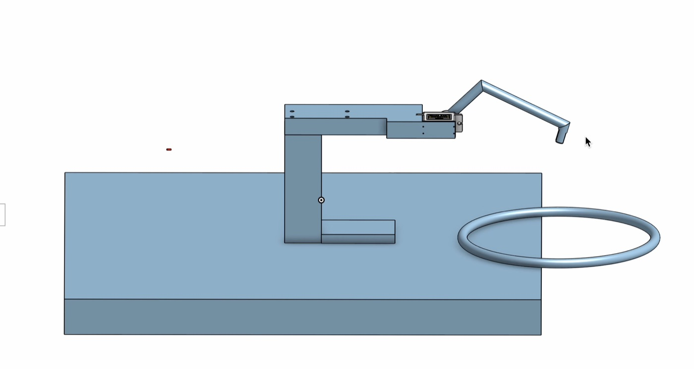
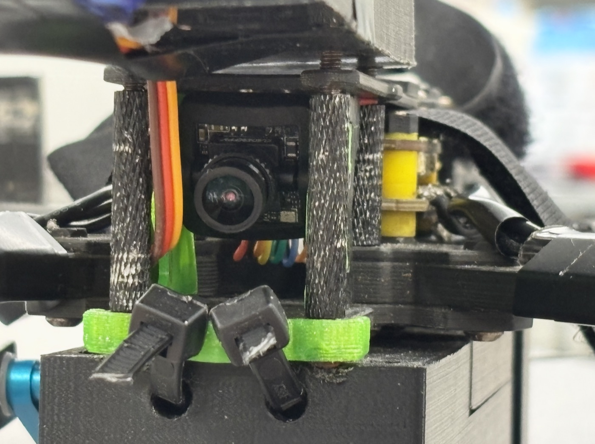
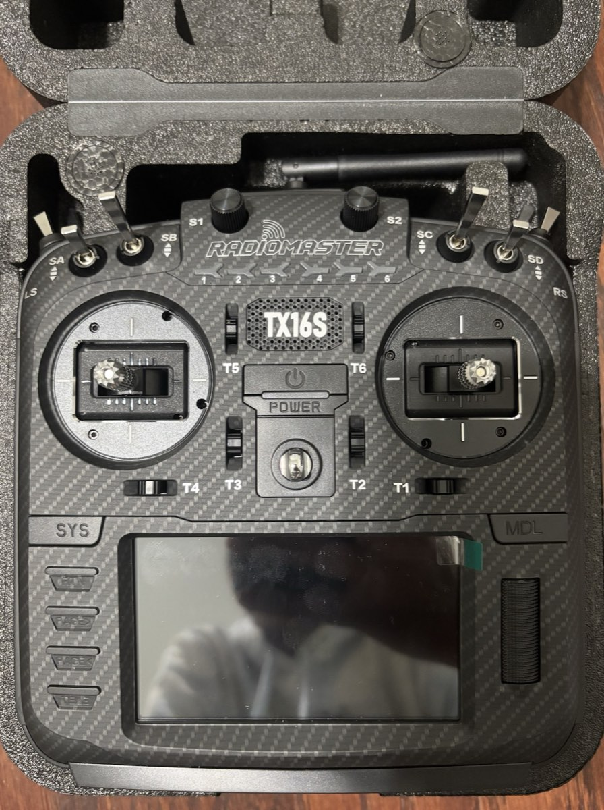
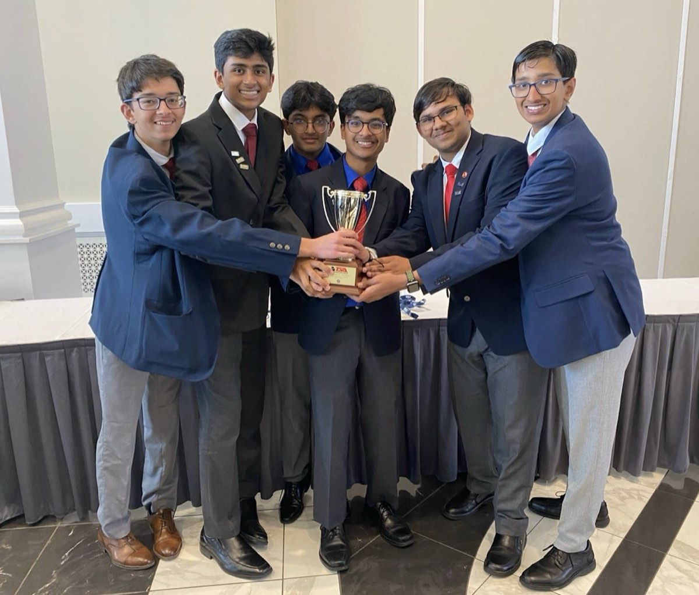

2025–26 · Aerospace
TSA Drone Challenge
A 5" racing quadcopter modified with a sponge-lined servo claw and dual FPV cameras for payload pickup and target search.
Overview
Our team took an existing 5" racing quadcopter and modified it to pick up an irregularly shaped payload with a claw and find hidden targets with two FPV cameras. I was team captain and primary pilot, flying under my FAA Part 107 certificate. We placed first at the TSA State Leadership Conference and top 10 at the national conference.
Problem
Modify an existing 5" racing quadcopter to carry a claw that can grip an irregularly shaped payload, and install two FPV cameras capable of locating hidden targets along the route, while keeping the drone smaller than a 12" cube.
Approach
Piloting
Before modifying anything, I trained on the existing drone and learned to fly fast, precise, controlled movements through a 10' × 10' obstacle course.
Claw
We brainstormed and prototyped grip concepts, ultimately lining the claw with dish sponge so it molds to any payload shape. Using servos, 3D prints, and meshed gears, we developed a claw integrated into the drone.
Simulation
We used CFD to determine how much the claw would hurt flight, and FEA to decide how thick to make the prop guards. Onshape simulations tested parts and subsystems against the drone as a whole.
Electronics
I learned the drone's circuitry and radio communication protocols to connect the cameras.
Results
A successful, working claw-equipped drone, flown under Part 107.


Gallery



Key takeaways
- CAD in robotics
- Drone control systems
- Drone piloting and agile maneuvering, my favorite part